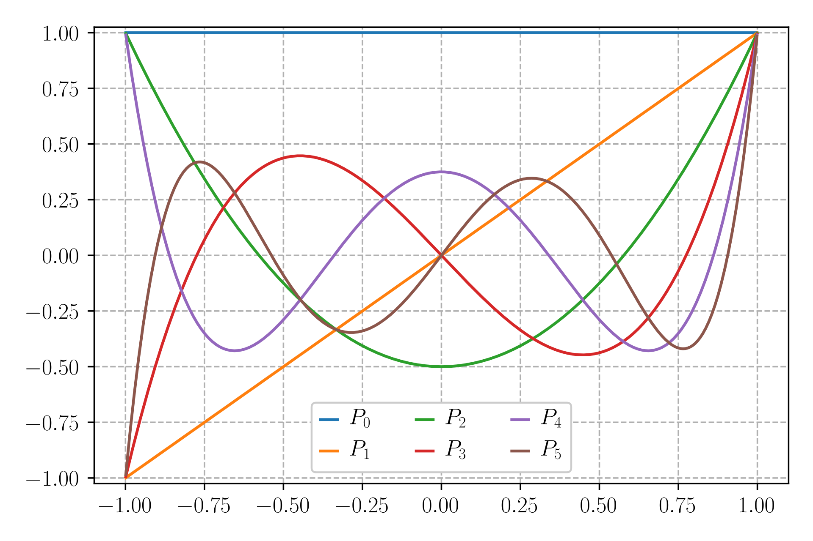
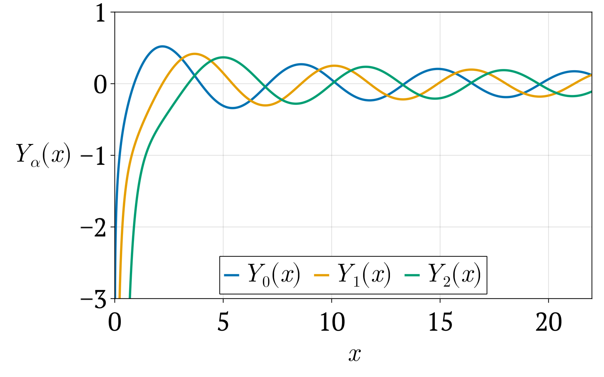

Chapter 9
Series Solutions of Ordinary Differential Equations (Chapter 12)
Ordinary, Regular Singular, and Irregular Points
Consider the second–order linear differential equation
where \(P(x)\) and \(Q(x)\) are known functions.
A function \(f(x)\) is called analytic at \(x=x_0\) if it can be written as a convergent power series in a neighborhood of \(x_0\):
Analytic functions are finite, smooth, and well behaved near \(x_0\).
A point \(x=x_0\) of the differential equation is classified as follows:
Ordinary point: \(x_0\) is an ordinary point if both \(P(x)\) and \(Q(x)\) are analytic at \(x_0\). All coefficients are finite and smooth, so we may solve the equation using a standard power–series (Taylor) expansion
\[ y(x)=\sum_{n=0}^{\infty} A_n (x-x_0)^n. \]Regular singular point: \(x_0\) is a regular singular point if \(P(x)\) or \(Q(x)\) diverge at \(x_0\), but the combinations
\[ (x-x_0)P(x), \qquad (x-x_0)^2 Q(x) \]are analytic at \(x_0\). The singularity is “mild’’ and the correct solution method is the Frobenius method, which assumes
\[ y(x)=\sum_{n=0}^{\infty} a_n (x-x_0)^{n+r},\qquad a_0\neq 0. \]This produces an indicial equation for \(r\) and a recurrence for \(a_n\).
Irregular singular point: If even \((x-x_0)P(x)\) or \((x-x_0)^2 Q(x)\) fail to be analytic, then the point is an irregular singular point. The singularity is “too strong’’ and ordinary series or Frobenius methods typically fail.
At an ordinary point, use a Taylor series.
At a regular singular point, use the Frobenius series.
Many special functions in physics—Legendre, Bessel, Hermite, Laguerre—originate from equations with regular singular points, where Frobenius expansions naturally apply.
We solve
by (1) the standard separable method and (2) a power–series method about \(x_0=0\).
Method 1: Standard (separable) solution.
For \(y\neq 0\),
Integrate both sides:
Exponentiate:
Let \(C_1 = \pm e^C\) (an arbitrary constant), then
Allowing \(C_1=0\) also includes the trivial solution \(y\equiv 0\):
Method 2: Power–series solution about \(x_0=0\).
Assume a power series
so
Substitute into \(y' = 2xy\):
Align the powers of \(x\).
On the left, set \(m=n-1\):
On the right, write the sum with index \(m\):
Thus
For \(m=0\), only the left sum contributes:
For \(m\ge 1\), equate coefficients of \(x^{m}\):
So the recurrence is
Compute the coefficients.
We see
Therefore
Renaming \(a_0\) as \(C_1\), we obtain the same family of solutions:
Legendre’s Differential Equation
Many physical systems with spherical symmetry—electrostatics, gravitational potentials, quantum mechanics, and classical wave equations—lead to the Legendre differential equation:
The points \(x=\pm1\) are regular singular points, while \(x=0\) is an ordinary point. Therefore ordinary power series work at the center, and Frobenius-type behavior appears at the endpoints.
Power–Series Solution About \(x=0\) (Ordinary Point)
We now derive the recurrence relation for the coefficients \(a_n\).
Assume a power–series solution about the ordinary point \(x=0\):
Then
Substitute these into Legendre’s equation
First expand the product \((1-x^2)y''\):
Now shift indices so that every sum is in powers of \(x^n\).
For the first sum, let \(k=n-2\) (equivalently \(n=k+2\)):
Renaming \(k\) back to \(n\),
The other sums already have powers \(x^n\) (we can extend the lower limit to \(0\), since the missing terms are zero):
Putting all pieces together:
Combine the last three sums:
Note that
so
Thus
For this identity to hold for all \(x\), each coefficient of \(x^n\) must vanish:
Solving for \(a_{n+2}\) gives the recurrence
which determines all higher coefficients from \(a_0\) and \(a_1\). Starting from the recurrence relation
we compute the first few coefficients.
Coefficient \(a_{2}\).
Set \(n=0\):
Coefficient \(a_{3}\).
Set \(n=1\):
Coefficient \(a_{4}\).
Set \(n=2\):
Using \(a_{2}=-\dfrac{\ell(\ell+1)}{2}a_{0}\):
Since \(6-\ell(\ell+1)=-(\ell-2)(\ell+3)\), this becomes
Coefficient \(a_{5}\).
Set \(n=3\):
Using \(a_{3}=\dfrac{2-\ell(\ell+1)}{6}a_{1}\):
Factoring,
so
Therefore
Even coefficients depend only on \(a_0\); odd coefficients depend only on \(a_1\). Thus the general solution splits into two independent series: one even in \(x\), built from \(a_0\), and one odd in \(x\), built from \(a_1\).
Polynomial Solutions: the Legendre Polynomials
Now restrict to the physically important case where \(\ell\) is a non-negative integer. The recurrence factor
vanishes when \(n=\ell\). Since even coefficients use \(n=0,2,4,\dots\) and odd coefficients use \(n=1,3,5,\dots\), the vanishing occurs either in the even or odd subsequence:
If \(\ell\) is even, then \(n=\ell\) appears in the even subsequence. The even series terminates at \(x^\ell\); set \(a_1=0\), \(a_0\neq 0\).
If \(\ell\) is odd, then \(n=\ell\) appears in the odd subsequence. The odd series terminates at \(x^\ell\); set \(a_0=0\), \(a_1\neq 0\).
Thus for each integer \(\ell\), exactly one of the two series becomes a finite polynomial of degree \(\ell\). This terminating series, normalized by \(P_\ell(1)=1\), is the Legendre polynomial \(P_\ell(x)\).
Even \(\ell\): \(P_\ell(x)\) comes from the even series (an even function of \(x\)).
Odd \(\ell\): \(P_\ell(x)\) comes from the odd series (an odd function of \(x\)).
We now illustrate this for \(\ell=0,1,2,3,4\), always normalizing with \(P_\ell(1)=1\).
Case \(\ell = 0\)
Here \(\ell(\ell+1)=0\). The even series gives
The odd series does not terminate. To obtain the polynomial solution, choose \(a_0\neq 0\) and set \(a_1=0\). Normalization \(P_0(1)=1\) gives \(a_0=1\), hence
Case \(\ell = 1\)
Here \(\ell(\ell+1)=2\). The odd series is
since the coefficient of \(x^3\) vanishes. The even series does not terminate. To get the polynomial, choose \(a_1\neq 0\), \(a_0=0\). With \(P_1(1)=1\), we take \(a_1=1\) and obtain
Case \(\ell = 2\)
Here \(\ell(\ell+1)=6\). The even series becomes
At \(n=2\), the factor \(n(n+1)-\ell(\ell+1)=6-6=0\), so all higher even coefficients vanish and the even series terminates. The odd series does not terminate. Choose \(a_0\neq 0,\;a_1=0\) and normalize with \(P_2(1)=1\):
so
Case \(\ell = 3\)
Here \(\ell(\ell+1)=12\). The odd series is
At \(n=3\), the factor \(n(n+1)-\ell(\ell+1)=12-12=0\), so higher odd coefficients vanish and the odd series terminates. The even series does not terminate. To obtain the polynomial, choose \(a_1\neq 0,\;a_0=0\). With \(P_3(1)=1\), we find \(a_1=3/2\), so
Case \(\ell = 4\)
Here \(\ell(\ell+1)=20\). The even series is
At \(n=4\), the factor \(n(n+1)-\ell(\ell+1)=20-20=0\), so higher even coefficients vanish and the even series terminates. The odd series does not terminate. Choose \(a_0\neq 0,\;a_1=0\) and normalize with \(P_4(1)=1\):
giving
Therefore Legendre Polynomials are
These polynomials appear throughout physics, especially in problems involving spherical symmetry such as multipole expansions, potential theory, and quantum angular momentum.
Radius of Convergence and Interval of Validity
For large \(n\),
Thus from
we get
This means that the coefficients behave like those of the geometric series
both of which converge only when \(|x|<1\).
This immediately gives
Behavior at the endpoints.
At \(x=\pm1\), the general term behaves like
and since
the terms do not tend to zero rapidly enough to converge. Typical endpoint behavior is of the form
which diverges. Therefore,
Only when the series terminates—that is, when \(\ell\) is a nonnegative integer—do we obtain a polynomial that is finite at the endpoints.
Interval of validity.
For non-terminating solutions,
For terminating solutions (the Legendre polynomials \(P_\ell(x)\)), the result is a finite polynomial of degree \(\ell\), so
In physical applications, \(x=\cos\theta\) ranges over \([-1,1]\). Therefore only the terminating solutions—Legendre polynomials—are acceptable, while the second independent solution diverges at the endpoints.
Rodrigues’ Formula for Legendre Polynomials
Another elegant way of generating these polynomials is provided by Rodrigues’ formula.
This formula expresses the Legendre polynomial \( P_\ell(x) \) as the \(\ell\)-th derivative of the simple algebraic function \( (x^2 - 1)^\ell \). It provides a direct computational method for generating all Legendre polynomials.
Examples
For \( \ell = 0 \):
Thus,
P_0(x) = 1
This matches the known result.
For \( \ell = 1 \):
Differentiate once:
Now apply Rodrigues’ formula:
P_1(x) = x
Again this matches the standard Legendre polynomial.
For \( \ell = 2 \):
Differentiate twice:
Apply the normalization factor:
P_2(x) = 12(3x^2 - 1)
Orthogonality
The Legendre polynomials satisfy an essential orthogonality relation on \([-1,1]\):
Orthogonality makes the Legendre polynomials a natural basis for expanding any sufficiently smooth function on \([-1,1]\). This is the spherical analogue of Fourier series.
Plot of Legendre Polynomials
Figure reference shows the first six Legendre polynomials \(P_0(x)\) through \(P_5(x)\) on the interval \(-1 \le x \le 1\). These polynomials are finite everywhere on the interval, alternate between even and odd parity, and exhibit an increasing number of oscillations with order.

Generating Function
The Legendre polynomials have a remarkable generating function:
For any power series
we can recover the coefficients by
Here, \(x\) is treated as a constant parameter and \(t\) is the series variable. Applying this to the generating function,
we get
(a) \(\ell=0\).
(b) \(\ell=1\). First derivative:
Evaluate at \(t=0\):
(c) \(\ell=2\). Second derivative:
Carrying out the differentiation (or using a CAS) gives
(d) \(\ell=3\).
Thus the generating function indeed reproduces the familiar Legendre polynomials:
Associated Legendre Functions
The associated Legendre functions arise naturally when solving Laplace’s equation or the angular part of the Schrödinger equation in spherical coordinates. They generalize the Legendre polynomials by introducing an integer parameter \(m\) that accounts for the dependence on the azimuthal angle \(\phi\).
Differential Equation
Starting from separation of variables on the sphere, the angular function \(P_\ell^m(x)\) satisfies the associated Legendre differential equation
where
For \(m=0\), the equation reduces to Legendre’s equation.
The points \(x=\pm1\) are regular singular points. A Frobenius expansion shows that near \(x=\pm1\) the solution behaves as \((1-x^2)^{m/2}\), which guarantees finiteness for integer \(m\).
Generating the Solutions
The associated Legendre functions can be obtained from the Legendre polynomials by repeated differentiation:
This formula produces all associated functions once \(P_\ell(x)\) is known.
Examples:
When \(m\) is even, \(P_\ell^m(x)\) has the same parity as \(P_\ell(x)\):
Orthogonality
For fixed \(m\), the associated Legendre functions are orthogonal on \([-1,1]\):
This extends the orthogonality of Legendre polynomials to functions of higher order \(m\).
Because of this orthogonality, associated Legendre functions play the same role in spherical problems that sines and cosines play in problems with Cartesian symmetry.
Connection to Spherical Harmonics
The full angular dependence of Laplace’s equation and the angular part of the Schrödinger equation in spherical coordinates is expressed using the spherical harmonics:
Normalization constant.
The spherical harmonics are orthonormal on the unit sphere,
This is achieved when
The factor \((-1)^{m}\) (the Condon–Shortley phase) is conventional and ensures consistency with standard quantum mechanics notation.
Each pair \((\ell,m)\) labels an angular momentum eigenstate.
\(P_{\ell}^{\,m}(\cos\theta)\) describes the dependence on the polar angle \(\theta\).
\(e^{im\phi}\) carries the azimuthal dependence and corresponds to the \(z\)-component of angular momentum.
Higher \(|m|\) values push the probability toward the equator (\(\theta=\pi/2\)), reflecting the classical picture of a rotating object with greater projection of angular momentum about the \(z\)-axis.
Thus, the associated Legendre functions provide the essential angular structure of all spherical harmonics.
Bessel’s Differential Equation
Bessel’s equation appears naturally in problems with cylindrical symmetry: heat conduction in cylinders, vibrations of circular membranes (“drumhead problem”), electromagnetic waves in cylindrical waveguides, and quantum mechanics in cylindrical potentials.
The Bessel differential equation of order \(p\) is
The point \(x=0\) is a regular singular point. Therefore we must use the Frobenius method (generalized power series). For \(x>0\), all coefficients are analytic and the equation is perfectly regular.
Frobenius Series Solution About \(x=0\) (Regular Singular Point)
We seek a generalized power series (Frobenius expansion)
where the exponent \(r\) is to be determined.
Compute derivatives:
Substitute into Bessel’s equation:
We obtain:
Simplifying each term:
Combine the first three sums:
Thus,
Shift the index in the \(x^{n+r+2}\) term. Starting from
let \(m = n+2\) (so \(n = m-2\)). Then
Renaming the index \(m \to n\) gives
Now all powers of \(x\) match:
Because this holds for all \(x\), each coefficient must vanish:
Indicial equation (coefficient of \(x^r\)):
\[ (r^2 - p^2)a_0 = 0 \quad\Rightarrow\quad \boxed{r = \pm p}. \]We assume \(a_0 \neq 0\), so the equation determines \(r\).
Coefficient of \(x^{r+1}\):
\[ [(1+r)^2 - p^2]\, a_1 = 0. \]For \(r=\pm p\), the factor is nonzero, so we must have
\[ \boxed{a_1 = 0}. \]Thus the series built from \(a_0\) contains only even powers of \(x\).
Recurrence relation for \(n\ge2\) (coefficient of \(x^{n+r}\)):
\[ \big((n+r)^2 - p^2\big)a_n + a_{n-2} = 0 \quad\Rightarrow\quad \boxed{ a_n = -\dfrac{a_{n-2}}{(n+r)^2 - p^2}. } \]
To obtain a solution that stays finite at \(x=0\), we choose the positive root\(r = p.\) Then the recurrence becomes
Since \(a_1=0\), all odd coefficients are zero. We therefore write \(n=2k\) (even index) and obtain
Gamma Function and Coefficient Formula
For \(\Re(z)>0\), the Gamma function is defined by
It satisfies the recursion
and in particular, for a positive integer \(n\),
We now use the recurrence \((\star)\) to write the first few even coefficients in a systematic way.
For \(k=1\):
For \(k=2\):
For \(k=3\):
We see the pattern: each new \(a_{2k}\) picks up a factor \(-1/[2^{2}k(k+p)]\), which builds up the factorials and Gamma functions.
By induction, the general even coefficient is
(For \(k=0\) this gives \(a_0\) back.)
Constructing the Series Solution
Our Frobenius ansatz was
Since only even \(n\) survive,
Insert the general coefficient (\(\dagger\)):
So
To obtain the standard Bessel function of the first kind \(J_p(x)\), we choose \(a_0\) so that the prefactor becomes 1. A convenient choice is
Then
and we arrive at the final series:
and the second solution is given by \( J_{-p}(x) \)
The First Solution for Integer Order
For integer order \(p=n\), the general series reduces to
since \(\Gamma(n+k+1) = (n+k)!\). This is the standard power–series definition of the Bessel function of the first kind. Small-order Bessel functions follow immediately:
The Second Solution for Integer Order
For integer \(p = n\) we have the symmetry relation
which shows that \(J_n\) and \(J_{-n}\) are not linearly independent when \(n\) is an integer. To obtain a second linearly independent solution, we define
which is well-defined for all non-integer \(p\). In the limit as \(p \to n \in \mathbb{Z}\), this expression produces the Bessel function of the second kind, often denoted \(Y_n(x)\) or \(N_n(x)\).
Near the origin, \(Y_n(x)\) diverges logarithmically:
where \(\gamma\) is the Euler–Mascheroni constant.
In most problems involving cylindrical symmetry (vibrating membranes, heat flow in cylinders, electromagnetic waves in cylindrical guides), the solution must remain finite at the origin. Since
the only physically acceptable solution is
Hankel Functions (Bessel Functions of the Third Kind)
The Bessel functions of the first and second kind, \(J_p(x)\) and \(Y_p(x)\), form a fundamental pair of real solutions to Bessel’s differential equation. In many applications—especially those involving wave propagation, radiation, or scattering—it is convenient to combine these into complex-valued solutions known as the Hankel functions.
The Hankel functions of the first and second kind are defined as
The functions \(H_p^{(1)}(x)\) and \(H_p^{(2)}(x)\) are linearly independent and form a complete pair of complex solutions to Bessel’s equation:
Graphical Behavior of Bessel Functions
To better understand the qualitative behavior of Bessel functions, it is useful to look at their graphs. Figure reference shows the first three Bessel functions of the first kind, \(J_0(x)\), \(J_1(x)\), and \(J_2(x)\), and Fig. reference shows the corresponding Bessel functions of the second kind, \(Y_0(x)\), \(Y_1(x)\), and \(Y_2(x)\), all plotted for \(0<x\le 20\).

\(J_0(x)\) starts from \(J_0(0)=1\); all higher orders satisfy \(J_n(0)=0\) for \(n\ge1\).
Each \(J_\alpha(x)\) oscillates with a wavelength that slowly approaches a constant as \(x\) increases.
The oscillations have a slowly decreasing amplitude, roughly decaying like \(1/\sqrt{x}\) for large \(x\).
The zeros of \(J_\alpha(x)\) are not equally spaced, but they become more nearly equally spaced as \(x\) grows.
Higher orders \(J_1(x)\), \(J_2(x),\dots\) are “pushed to the right’’: they remain small near the origin and their first zero occurs at larger values of \(x\).

Near the origin, all \(Y_\alpha(x)\) have a logarithmic singularity and diverge to \(-\infty\) as \(x\to0^{+}\).
For \(x\) away from zero, \(Y_\alpha(x)\) oscillate with a behavior similar to \(J_\alpha(x)\): approximately sinusoidal with a slowly decreasing amplitude for large \(x\).
Because of the divergence at \(x=0\), \(Y_\alpha(x)\) are usually not acceptable in physical problems where the solution must remain finite at the origin (for example, in cylindrical coordinates with a physical axis at \(r=0\)).
Nevertheless, \(Y_\alpha(x)\) form, together with \(J_\alpha(x)\), a complete set of independent solutions of Bessel’s equation on \((0,\infty)\).
Orthogonality
On the interval \(0\le x\le R\), the Bessel functions satisfy
where \(\alpha_{p n}\) are the zeros of \(J_p(x)\).
This orthogonality makes Bessel functions the natural basis for expanding functions defined on circular domains, just as Legendre polynomials are the natural basis on \([-1,1]\).
Generating Function
The Bessel functions have the elegant generating function
Expanding for small \(t\) yields
Differentiating with respect to \(t\) and evaluating at \(t=0\) (or \(\infty\)) extracts \(J_n(x)\) in the same manner as with Legendre polynomials.
Orthogonal Eigenfunction Bases in Physics
We have learned that many important families of functions form orthogonal and complete bases. This means that any physically meaningful function can be expanded using these basis functions, and the expansion coefficients follow directly from their orthogonality relations.
In this section we summarize three of the most important bases encountered in mathematical physics:
1. Fourier Series Modes \(e^{ik_n x}\): Basis on a Finite Interval
On the interval \(\left[-\dfrac{L}{2},\,\dfrac{L}{2}\right]\), the complex Fourier basis functions are
Thus any function \(f(x)\) defined on \(\left[-\dfrac{L}{2},\,\dfrac{L}{2}\right]\) can be expanded as a Fourier series:
Using orthogonality, the expansion coefficients are
Therefore, the set \(\{e^{ik_n x}\}\) forms a complete orthogonal basis on \(\left[-\dfrac{L}{2},\,\dfrac{L}{2}\right]\).
2. Legendre Polynomials \(P_\ell(x)\): Basis on \([-1,1]\)
When the problem depends only on an angular variable through \(x = \cos\theta\), the relevant basis functions are the Legendre polynomials:
A function \(f(x)\) defined on \([-1,1]\) can be expanded as
with coefficients obtained from orthogonality:
Thus \(\{P_\ell(x)\}\) forms a complete orthogonal basis on \([-1,1]\).
3. Spherical Harmonics \(Y_{\ell m}(\theta,\phi)\): Basis on the Sphere
For functions defined on the sphere, the natural basis is the set of spherical harmonics:
Any square-integrable function on the sphere can be expanded as
with expansion coefficients
Thus \(\{Y_{\ell m}\}\) forms a complete orthonormal basis on the sphere \(S^{2}\).